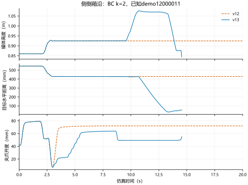
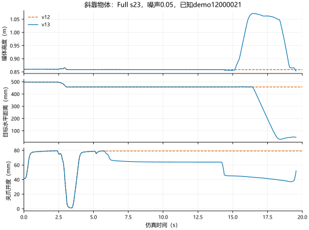
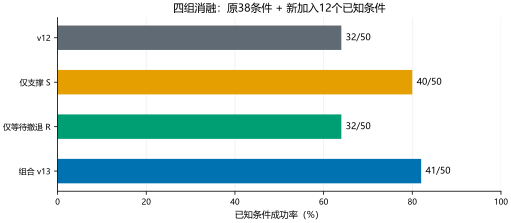
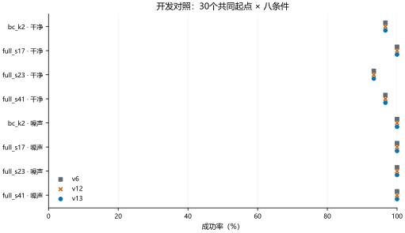

开发对照已达标，等待完成全新起点独立确认。
侧倒箱沿与斜靠物体的稳定支撑识别，长等待后的受检撤退与重规划。原BC/世界模型权重冻结，400步、D2、20Hz保持不变。
v12：3/6 / support：5/6 / escape：3/6 / v13：6/6
v12：32/50 / support：40/50 / escape：32/50 / v13：41/50
v13：236/240
保持预设门槛和400步总预算。
v12确认中已查看的失败起点，本轮属于已知诊断。只有本轮冻结后新生成的起点才属于独立确认。支撑判定是候选资格，不是力闭合或全臂安全证明；未知状态不会默认下降。
20fps / 20Hz，保存动作逐步物理回放。已知诊断案例，不作为独立泛化证据。
四组：v12、仅支撑组件S、仅等待撤退组件R、组合v13。中间小测试和失败记录保留：B预算修订 · C日志格式 · D路径入口 · E必要横移与路径重验。



